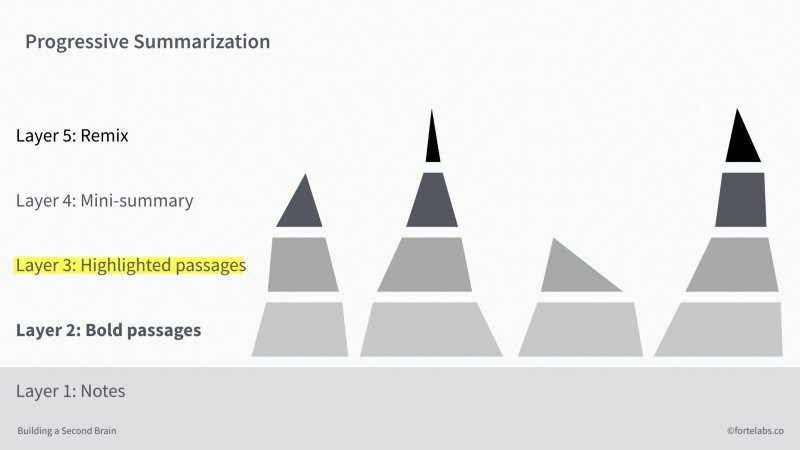
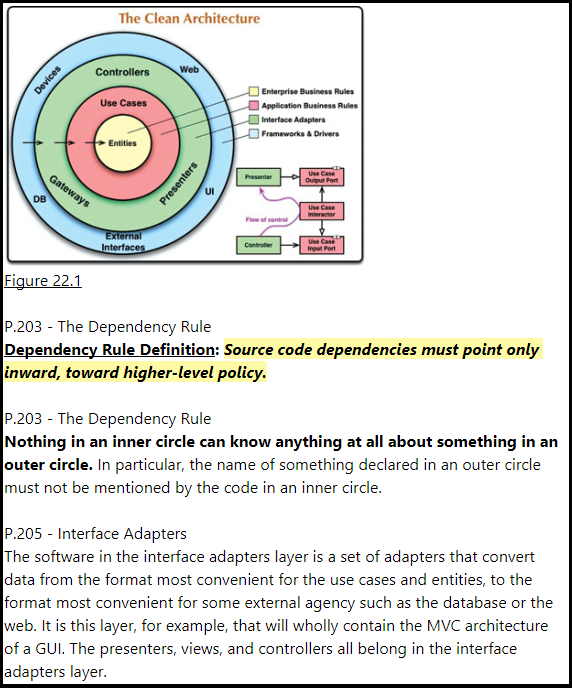
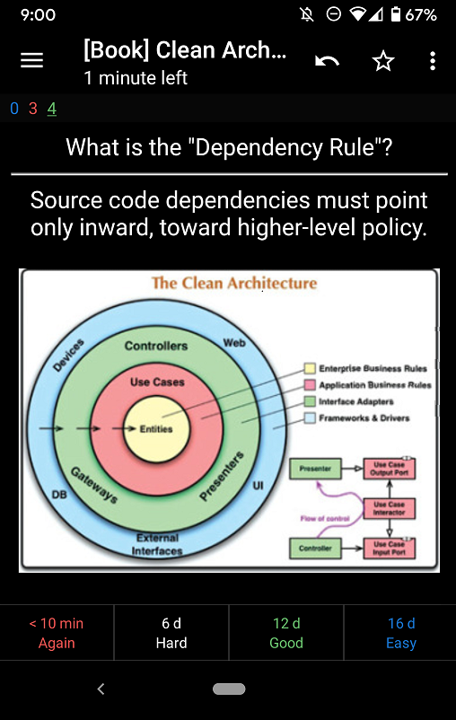

It is probably easier to explain what ineffective reading is first.
If you are “seeing” the words without processing, no matter how many words you “see” per minute, it is ineffective. If you cannot recall or refer to the key concepts of an inspiring book you have read in the past, no matter how many books you have read, it is ineffective. If you cannot implement what you read and make some differences in real life, no matter how many books you are aiming to read in a year, it is ineffective.
So, what is effective reading? “Effectiveness” here means maximizing the understanding, the usage and the retention of knowledge for the future per unit of time spent reading.
Ineffective reading is always a problem. So far, I have developed three ways to make reading less ineffective.
- Mindful Reading - for understanding
- Summarization - for discoverability
- Digital Flashcard - for retention
1. Mindful Reading
Mindful reading is the first key to read effectively. It ensures you are really reading and understanding what the author is saying.
The converse of mindful reading is mindless reading. During mindless reading, we are seeing the words instead of understanding them. We are not able to recall what we read one minute ago. When I realize I am reading mindlessly, I stop, do something else or take some rest. Mindless reading is ineffective. It is a waste of time and energy.
2. Summarization
Understanding decays because we, humans, forget. It is okay to forget. However, when we need to use a piece of forgotten knowledge, we want to be able to reload the knowledge as fast as possible.
Summarization is like building a personal index. It allows you to navigate through important concepts and to retrieve context and knowledge swiftly. Without summarization, we will need to spend a huge amount of time reading the material again to find what we need. This is definitely ineffective.
The method I use is Tiago Forte’s Progressive Summarization. It highlights and formats the readings into layers. The higher layers are compressed to make the notes discoverable and the lower layers provide context.

- Layer 0: the original, full-length source text
- Layer 1: the content that initially bring into note-taking program.
- Layer 2: the first round of summarization, the best parts
- Layer 3: the second round of summarization, among all Layer 2, “the best of the best”
- Layer 4: the summary in my own words.
- Layer 5: add my own personality and creativity and turn them into something else.
A real example 1

This is my summary for “Clean Architecture Ch.22”. When I read the note, I first look at the top summary (layer 4), and then the yellow highlight (layer 3). This should give me most idea of what this chapter is about. If I need more, then I read the bold (layer 2) highlights and then the plain text highlights to get more context. If I still need more, then I could go to the original chapter.
3. Digital Flashcards
If you’ve got a leaky bucket, you’re better off fixing the leak before pouring water in the top.
I mentioned above that we, humans, forget and it is okay to forget. What if we need to retain something in the brain? For instance, memorizing vocabularies could reduce the effort of checking a dictionary (and thus making reading more effective!). Internalizing key concepts could make it easier to utilize them.
My method is to formulate the knowledge into digital flashcards and review them with spaced repetition. (I review the cards every night when I am holding my sleeping Casper.)
SuperMemo and Anki are among the popular software in this realm. No matter which software to use, read these twenty rules published by SuperMemo about the best practices of formulating knowledge. “Do not learn if you do not understand” is the wisdom.
A real example 2

After creating the summary above, I think “Dependency Rule” is a very key concept that is worth memorizing, so I create a corresponding flashcard. When reviewing the card, if this feels “easy” to me, I will tap “16d Easy” to snooze the card 16 days later. If I cannot recall the meaning in 10 seconds, then I tap “<10 min Again”.
Conclusion
“The only way to go fast is to go well”, Robert C. Martin
I think this applies to many things, including coding, driving and reading. All of mindful reading, summarization, and making flashcards slow us down in terms of the number of words and books you read in a given time. However, they are ways to go fast in terms of effectiveness.
I am still learning how to make the reading process more effective. If you have any tips, please let me know. :)